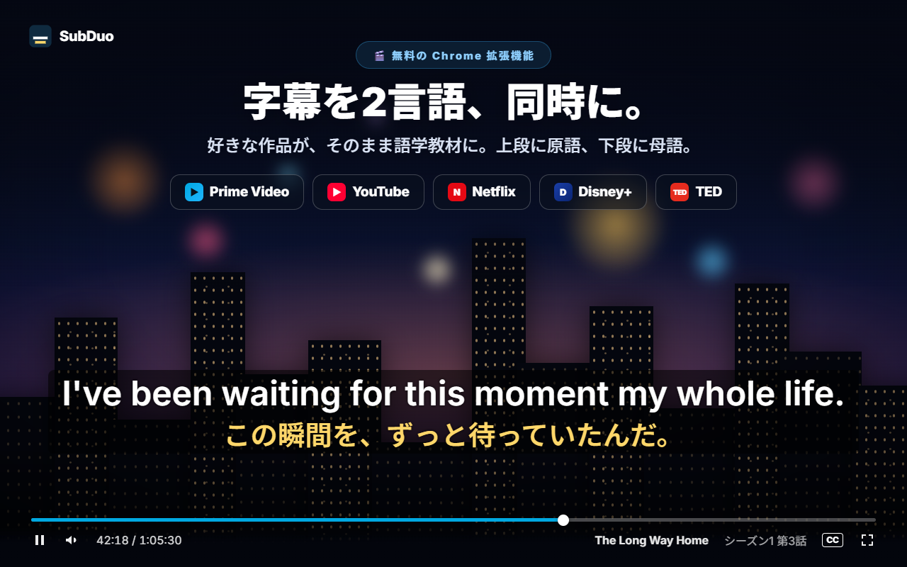
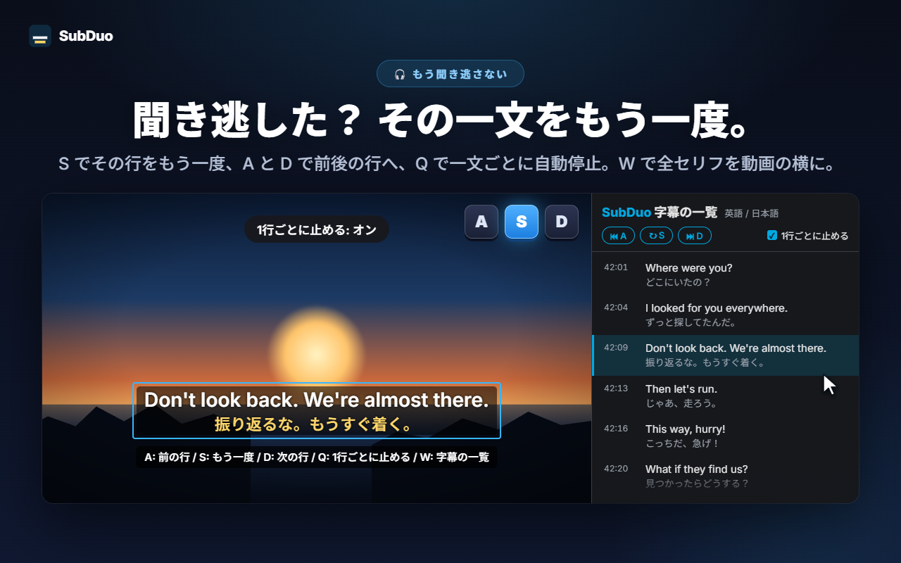
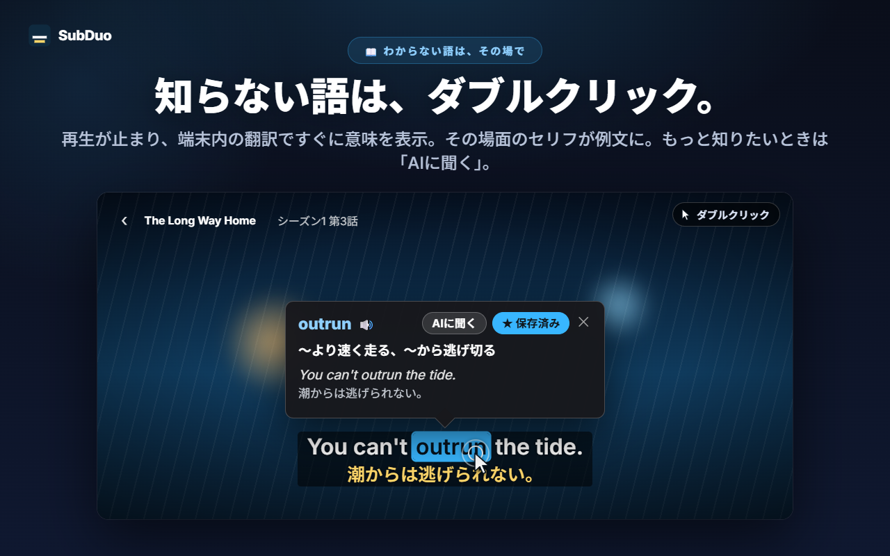
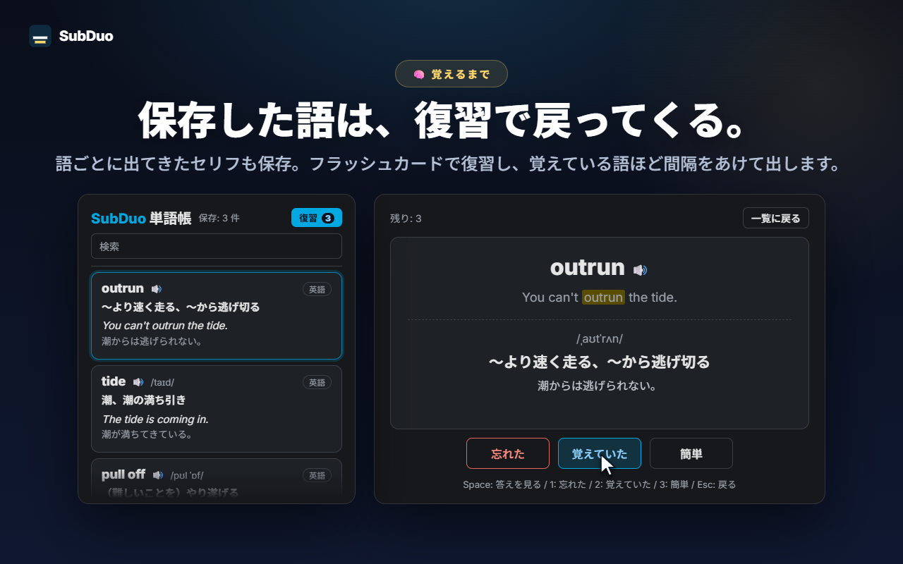

好きな2言語の字幕
サイトが用意している字幕は、再生した時点で自動で検出。YouTube の自動生成字幕にも対応します。段ごとに1言語を選ぶか、片方を非表示にできます。
SubDuo は字幕を2言語同時に表示します。上段に原語、下段に日本語。わからない語はダブルクリックで意味を表示、聞き逃した行は1キーでもう一度。覚えたい語は単語帳に保存できます。
各サイトにある字幕をそのまま使用 · アカウント不要 · 字幕はブラウザの外に出ません
動画プレイヤーが表示できる字幕は1言語だけ。SubDuo はもう1言語を重ね、そこから学ぶための道具もそろえます。
拡張機能の実際の画面を、日本語で紹介します。

作品に用意された字幕から好きな2言語を選べます。上段に原語、下段に日本語。字幕はドラッグで好きな位置へ、段の上でホイールを回せば大きさを変更、右クリックで色・透過度・ぼかしを設定できます。

S でその行をもう一度、A と D で前後の行へ、Q で1行ごとに自動で一時停止。W を押すと Chrome のサイドパネルに字幕の一覧が開き、2言語のセリフを1行ずつ読めます。行を押せばその場面へ移動します。

再生が止まり、Chrome 内蔵の翻訳が端末内で訳した意味をすぐにカードで表示します。例文はその場面のセリフそのもの。語句の範囲は Alt＋ドラッグで選べます。「AIに聞く」を押すと、文脈に合った意味・発音・例文がわかります。

保存した語には、出てきたセリフも一緒に残ります。単語帳では検索・言語での絞り込み・発音の再生ができ、フラッシュカードで復習。覚えている語ほど、次に出てくるまでの間隔が長くなります。
アカウント登録も初期設定も不要。入れて再生するだけです。
Chrome ウェブストアから SubDuo を追加し、Prime Video・YouTube・Netflix・Disney+・TED で動画を再生します。
SubDuo のアイコンをクリックし、上段と下段の字幕言語を1つずつ選びます。選択肢に出るのは、その作品にある字幕だけです。
語をダブルクリックで調べ、A・S・D で行を聞き直し、単語帳はポップアップから開けます。
観ながら学びたい人のために。字幕は、必要になるまで邪魔をしません。
サイトが用意している字幕は、再生した時点で自動で検出。YouTube の自動生成字幕にも対応します。段ごとに1言語を選ぶか、片方を非表示にできます。
語をダブルクリックまたは Alt＋クリック、語句は Alt＋ドラッグ。再生が止まり、端末内で訳した意味が動画の上に出ます。
文脈に合った意味・発音・例文を、表示言語で解説します。解説は1日20回まで無料です。
ワンクリックで保存し、検索・言語での絞り込み・🔊で発音の再生ができます。フラッシュカードは覚えている語ほど間隔をあけて出します。
A で前の行、S でもう一度、D で次の行。Q で1行ごとに一時停止。片方の段をぼかして力試しし、ポインタを乗せて答え合わせできます。
2言語の全セリフを動画の横に一覧表示。再生中の行を強調し、行を押せばその場面へ移動します。W キーで開けます。
ドラッグで移動、ホイールで段ごとの大きさ、矢印キーで微調整、左・中央・右揃え。右クリックで段ごとの色・透過度・ぼかしを設定できます。
YouTube では大きく、Netflix では控えめに。設定はサイトごとに保存され、Chrome で同期されます。
メニュー・訳・AI の解説は、選んだ表示言語で表示されます。Chrome の言語とは別に設定できます。
SubDuo は各サイトがブラウザに届けている字幕ファイルを読み、ブラウザの中で描画します。外へ送るのは、あなたが「AIに聞く」を押した語句と、その字幕の行だけです。
字幕はブラウザ内で解析して描画します。設定・単語帳・視聴履歴を開発者に送ることはありません。語の翻訳は Chrome 内蔵の翻訳機能が端末内で行います。
「AIに聞く」を押したときだけ、選んだ語句・その字幕の行と画面上のもう一方の行・言語コード・1日の回数管理用のランダムな端末識別子を SubDuo のサーバーへ送り、サーバーが OpenAI に解説を依頼します。サービスの運用のため IP アドレスを処理します。
登録するものは何もありません。拡張機能に広告や解析ツールは入っていません。
「storage」（設定と単語帳）、「scripting」（更新後に開いているタブへ再接続）、「sidePanel」（字幕の一覧）と、対応5サイトへのアクセスだけです。
Chrome ウェブストアから数秒でインストール